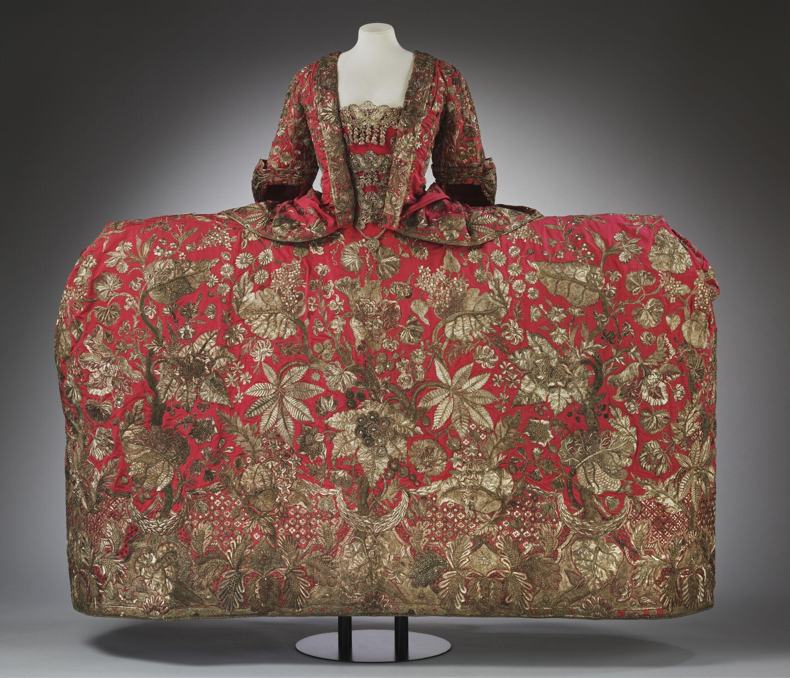

Lab 04
Rococo Fashion

JPG File
The 1740s were the height of the Rococo era, and the decadent fashion of the era reflects both the concentration of wealth in the highest echelons of society, and invites question into the subsequent poverty that made it possible. I chose this dress because it is an excellent example of the way court fashion was designed to be a maximum display of the wearer’s wealth. The embroidery alone weighed nearly 10 lbs of silver thread, woven into an incredibly intricate design